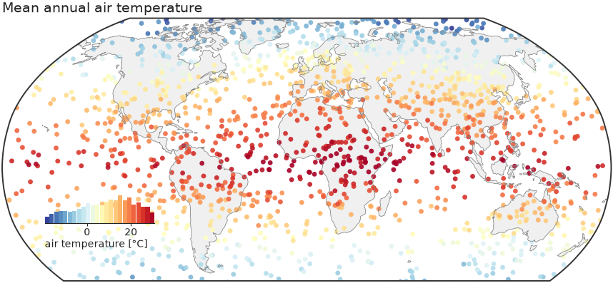
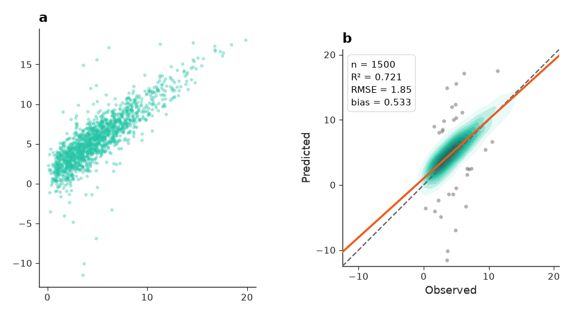
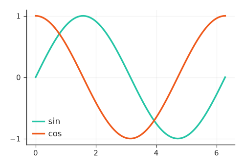

Quickstart¶
This page installs nicefigs, draws a first map, saves it, and introduces the conventions every helper follows.
Installing¶
The maps extra pulls in cartopy and shapely, which draw the projected
maps and clip to land. Without it, maps fall back to a plain equirectangular
axes.
Setting the house style¶
set_theme applies a theme's rcParams globally and
returns the resolved Theme:
import nicefigs as nf
theme = nf.set_theme("paper")
print(theme.name, theme.fs_axis_label, theme.fs_tick)
Font sizes are in points. The presets range from dense multi-panel "paper"
figures to "talk" and "poster"; see Styling & themes.
Drawing a first map¶
map draws a Robinson world map with Antarctica cropped,
scatters the values, and adds an inset histogram that doubles as the colorbar:
import nicefigs as nf
from nicefigs import data
nf.set_theme("paper")
lon, lat, temp = data.global_points(field="temperature")
fig, ax, mappable = nf.map(
lon, lat, temp,
cmap="RdYlBu_r",
colorbar_label="air temperature [°C]",
title="Mean annual air temperature",
)

See Maps for projections, regional extents and binning.
Saving figures¶
save writes one tight file per format, creating parent
directories, and returns the written paths:
import nicefigs as nf
fig, ax = nf.subplots(width="half")
ax.plot([0, 1, 2], [0, 1, 4])
paths = nf.save(fig, "figures/first", formats=("pdf", "png"), close=True)
print([p.as_posix() for p in paths])
Raster formats use the theme's savedpi (300 by default); close=True closes
the figure once it is written.
Following the calling conventions¶
Every helper has one of three shapes:
- Plotting helpers draw data onto one axes. They take
ax=Noneas a keyword and create a figure when it is missing. They returnax, or(ax, extra)when they also produce something you need: the mappable for a colorbar, the statistics of an agreement plot, the indices of a Pareto frontier. - Figure helpers build a whole figure. They return
(fig, axes)or(fig, axes, extra), always in that order:mapreturns(fig, ax, mappable),animate_mapsreturns(fig, ax, anim),model_comparisonreturns(fig, axes). - Decorators annotate an axes you already have: panel labels, colorbars, legends of 2D colormaps, reference lines, map backgrounds. They take that axes as their first, required argument.
import nicefigs as nf
from nicefigs import data
obs, pred = data.xy_agreement()
fig, axes = nf.subplots(1, 2, width="full", panel_aspect=1.0, wspace=0.4)
nf.scatter(obs, pred, ax=axes[0], s=4, alpha=0.4) # plotting helper
ax, stats = nf.agreement(obs, pred, ax=axes[1]) # plotting helper with an extra
nf.label_panels(axes) # decorator
print(sorted(stats))

Unit arguments are named units, xunits, yunits or <thing>_units.
Wherever a helper asks which way is better, it takes one of
DIRECTIONS:
Styling existing matplotlib code¶
style applies a theme only inside a with block, so
plain matplotlib code picks up the house style without a global change:
import matplotlib.pyplot as plt
import numpy as np
import nicefigs as nf
x = np.linspace(0, 2 * np.pi, 100)
with nf.style("paper", **{"axes.grid": True}):
fig, ax = plt.subplots(figsize=(2.75, 1.8))
ax.plot(x, np.sin(x), label="sin")
ax.plot(x, np.cos(x), label="cos")
ax.legend()

Keyword arguments after the theme name are raw rcParams overrides.
Sizing figures physically¶
Pick a named width and an aspect ratio instead of inches; the other dimension is solved:
A "single" column is 89 mm wide. Named widths also include "double",
"full", "half" and "slide"; see Figures & sizing for
the full list.
Next steps¶
- Browse the Gallery for every plot family with its source code.
- Read the guide, starting at Styling & themes.
- Look up any function in the API Reference.